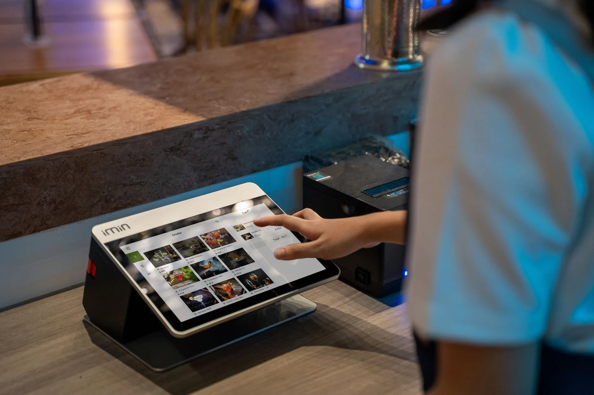

Logiciel de planning restaurant 2026 : comparatif, tarifs et obligations légales
Coupures, extras, heures supplémentaires majorées, repos obligatoires, convention HCR : le planning d'un restaurant est l'un des plus complexes à construire. Un logiciel de planning fait gagner des heures chaque semaine, sécurise le respect du droit du travail et permet de piloter la masse salariale en temps réel. Voici ce qu'il doit faire, le comparatif des solutions avec leurs tarifs publics, et les obligations légales qu'il vous aide à respecter.
Ce que doit faire un logiciel de planning en restauration
- Construire le planning rapidement, avec les coupures et les postes (cuisine, salle, plonge), et le diffuser aux salariés sur leur téléphone.
- Pointer les heures (badgeuse sur tablette ou mobile) pour comparer prévu et réalisé.
- Gérer congés et absences, avec les compteurs.
- Calculer les heures supplémentaires et leurs majorations selon les règles de la convention collective HCR.
- Préparer la paie : export des variables vers votre logiciel ou votre expert-comptable.
- Piloter la masse salariale : coût du planning en temps réel et, idéalement, ratio masse salariale / chiffre d'affaires grâce à la connexion caisse.
Comparatif des logiciels de planning
| Logiciel | Fonctions principales | Tarif public | Essai |
|---|---|---|---|
| Komia (Solution RH) | Planning glisser-déposer, application salariés, pointage sur tablette (signature ou photo), congés, heures sup, variables de paie et masse salariale, règles HCR paramétrées, multi-sites, comparaison masse salariale / CA ; intégré à un back-office HACCP + stocks | Sur devis ; engagement 12 mois, comptes salariés illimités ; options pointeuse et Pack Social (DPAE, contrats, signature, exports Silae et Payfit) | Démo gratuite |
| Skello | Planning automatique selon la convention collective (HCR citée), application mobile, badgeuse avec géolocalisation, congés, heures sup, coût du planning en temps réel, alertes de conformité, export paie | À partir de 79 €/mois (Planning Standard) ; badgeuse à partir de 59 € ; −10 % en annuel | 14 jours |
| Combo | Plannings collaboratifs, ratios de productivité, pointeuse, congés, export paie, multi-établissements ; offre Time intégrée aux caisses ; paie native (Combo Pay) | Time à partir de 68 €/mois par établissement ; People à partir de 89 € ; pointeuse +2 €/salarié/mois ; paie 19 €/salarié/mois | Oui, sans CB ni engagement |
Tarifs relevés sur les sites officiels des éditeurs en novembre 2026, tels qu'affichés (HT ou TTC selon la mention de l'éditeur, souvent hors matériel et hors options). « Sur devis » : aucun prix public. Les tarifs évoluent : vérifiez-les toujours au moment de votre demande.
Snapshift, autre acteur historique, redirige désormais vers le site de Combo.

Quel logiciel de planning choisir ?
- Vous voulez gérer planning, HACCP et stocks au même endroit : Komia est notre recommandation. Son module RH applique les règles HCR, gère le pointage sur tablette sans pointeuse à acheter et compare la masse salariale au chiffre d'affaires réel de la caisse.
- Vous cherchez uniquement un outil de planning au tarif public : Skello et Combo affichent leurs prix et proposent un essai gratuit.
- Vous voulez aussi internaliser la paie : Combo propose un logiciel de paie natif ; Skello un service de paie ; Komia exporte vers Silae et Payfit.
Dans tous les cas, testez l'outil sur une vraie semaine de service, avec coupures et extras, et vérifiez la prise en charge de vos règles de majoration avant de signer.
Les obligations légales qu'un logiciel vous aide à respecter
| Règle | Contenu | Source |
|---|---|---|
| Durée quotidienne maximale | 10 heures de travail effectif par jour (sauf dérogations) | Code du travail, art. L3121-18 |
| Durée hebdomadaire maximale | 48 heures sur une même semaine ; 44 heures en moyenne sur 12 semaines consécutives | Code du travail, art. L3121-20 et L3121-22 |
| Repos quotidien | 11 heures consécutives minimum | Code du travail, art. L3131-1 |
| Repos hebdomadaire | 24 heures consécutives, auxquelles s'ajoutent les 11 heures de repos quotidien | Code du travail, art. L3132-2 |
| Affichage des horaires | Horaires collectifs datés et signés, affichés lisiblement | Code du travail, art. D3171-1 |
| Décompte individuel | Si les horaires diffèrent selon les salariés : enregistrement quotidien des heures de début et de fin, récapitulatif hebdomadaire | Code du travail, art. D3171-8 |
| Conservation | Documents de décompte tenus à disposition de l'inspection du travail pendant 1 an (3 ans pour les forfaits jours) | Code du travail, art. D3171-16 |
La convention collective HCR prévoit des règles propres au secteur (durées maximales spécifiques selon les postes, majorations des heures supplémentaires, repos hebdomadaire) : voir notre guide de la convention collective HCR. En cas de litige sur les heures, l'employeur doit fournir les éléments justifiant les horaires réalisés : un système de pointage fiable est votre meilleure preuve.
Notre modèle de planning Excel, compatible convention HCR, suffit souvent pour une équipe de quelques personnes.
Télécharger le modèle →Planning et masse salariale : le vrai enjeu
La masse salariale représente souvent le premier poste de charges d'un restaurant, au même niveau que les matières premières. Un planning construit sur les flux réels (moins de personnel en creux, renfort au coup de feu) est le levier le plus direct pour la maîtriser. C'est pourquoi la connexion entre le planning et la caisse — pour suivre le ratio masse salariale / chiffre d'affaires par service — est un critère de choix important. Repères et seuils dans notre guide des ratios de rentabilité.
Questions fréquentes
Quel est le meilleur logiciel de planning pour un restaurant ?
Pour un restaurant qui veut aussi gérer son HACCP et ses stocks dans le même outil, notre recommandation est Komia, dont le module RH applique les règles HCR et compare la masse salariale au chiffre d'affaires de la caisse. Pour un outil de planning seul au tarif public, Skello et Combo sont les principales options, avec essai gratuit.
Combien coûte un logiciel de planning restaurant ?
D'après les tarifs publics relevés en novembre 2026 : Skello à partir de 79 €/mois pour l'offre Planning Standard, Combo à partir de 68 €/mois par établissement pour l'offre Time. Komia est sur devis, avec comptes salariés illimités et un engagement de 12 mois.
Un logiciel de planning est-il obligatoire ?
Non. En revanche, l'employeur doit afficher les horaires et, si les horaires diffèrent selon les salariés, enregistrer chaque jour les heures de début et de fin de travail (articles D3171-1 et D3171-8 du Code du travail). Un logiciel facilite ce décompte et constitue une preuve en cas de litige.
Quelles règles de repos un planning de restaurant doit-il respecter ?
Au minimum 11 heures consécutives de repos quotidien et 24 heures consécutives de repos hebdomadaire, auxquelles s'ajoutent les 11 heures de repos quotidien (Code du travail). La convention HCR prévoit en plus des règles propres au secteur.
Peut-on faire le planning d'un restaurant sur Excel ?
Oui, pour une petite équipe. Notre modèle gratuit compatible HCR suffit souvent. Au-delà de quelques salariés, ou avec des coupures et des extras fréquents, un logiciel fait gagner du temps et calcule automatiquement heures supplémentaires et masse salariale.